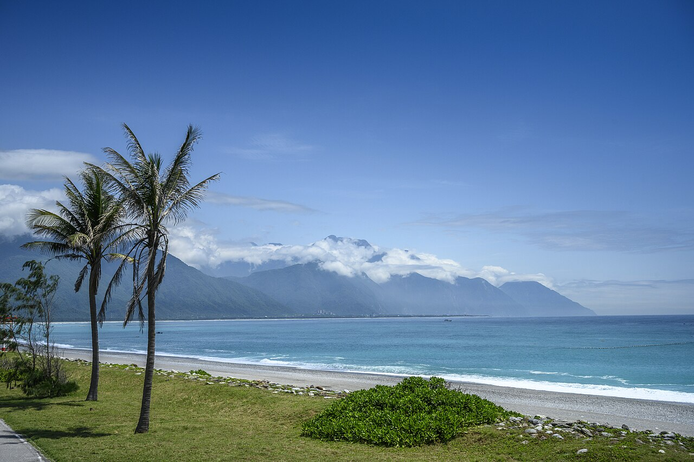
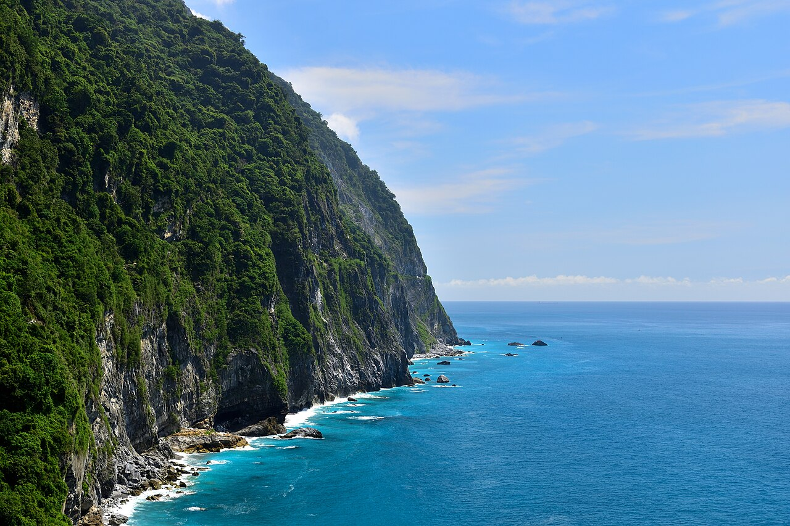

四天三夜 · 桃園來回 · 山城與花蓮海岸自駕
把今年最後幾天，
留給山城小吃與海。
九份與十分慢慢吃，七星潭與清水斷崖慢慢看。
最後一晚，在蘇澳泡湯迎接新年。
12.292026 二—01.012027 五
香港出發／台灣與香港同為 UTC+8／雙人房預算比較
海 · 湯 · 年
東 岸 慢 遊
東 岸 慢 遊
依最後圈選，重新排路線
山城吃小吃，
花蓮看海。
這版優先十分、九份、七星潭、清水斷崖，保留四天三夜，刪去台北市區與礁溪住宿。三晚住基隆、花蓮、蘇澳；普通晚餐改小吃，跨年晚餐留飯店。全程自駕，不安排火車、公車或接駁巴士。
四個圈選重點短停、可坐、可刪減12/31留飯店倒數
接受花蓮增加車程的版本：全程估650–800km、純行車合計約11–16小時，另加休息與塞車。蘇花因桃園來回必須南下再北返；把七星潭放南下、清水斷崖放北返，減少景點間折返。三晚換房，行李每天搬一次。
去程已訂 · UTC+8
12/29 國泰CX488 · 08:00香港 → 09:40桃園
按已提供訂單安排；目標11:15–12:00取車，入境、行李及交車可能更久。約13:00十分短停，14:30九份，16:15後基隆。12:30後才取車就先刪十分，避免天黑趕山路。
回程尚未確認，仍以1/1偏晚航班留餘裕；機票實付金額未提供，預算可填「已付去程＋待購回程」。航班以航空公司最新通知為準。
THE ROAD BOOK
一天一頁，剛剛好的行程。
切換日期，勾選想停的地方。
選項與預算會留在同一個瀏覽器。
YOUR CIRCLED FAVOURITES
把喜歡的山海，留在主線。
以第二張圈選為準。
照片是既有實景紀錄，非2026開放狀態證明。


十分也在主線，瀑布步道不加。
12/29先到十分老街，只走鐵道旁一小段、吃雞翅包飯；不搭火車、不走瀑布。取車晚便先略過，翌日可勾選補訪，七星潭會自動移到31日早上。第一張圖的賞鯨未列入這次優先清單，冬季海況也不適合當必去承諾。
SNACKS, SEA & SLOW EVENINGS
普通晚上，留給小吃與宵夜。
不吃一整桌，少量分食。
只走一小區，不要求逛完整個夜市。
廟口挑三四樣，坐下慢慢吃。
鼎邊趖、天婦羅、營養三明治、泡泡冰挑喜歡的分食。17:30左右先吃晚餐；21:00後想加宵夜，只找當晚仍營業的近店。
住長榮可短程開到東岸停車場；集好更靠近廟口，選靠入口的一小段。任一家排太久就換。
東岸停車導航東大門吃晚餐，回飯店早休息。
先買官財板等一份主食，再配烤物或玉米；不把十幾攤全吃完。下午早到才考慮復興街蔥油餅，它不是深夜宵夜。
想加蒸餃先查當晚是否營業；本版不把任何小店標成24小時。廟口紅茶有停業重建消息，未確認重開前不列主推。
選小吃備選跨年是唯一正式晚餐。
白天北返，午餐簡單吃，下午泡湯。選瓏山林含晚餐方案，晚上不再開車找餐廳、不排熱門大餐。
派對及煙火依飯店安排，天候可能調整。元旦從蘇澳回機場，少一段花蓮趕航班的壓力。
查看跨年方案THREE WAYS TO SAY HELLO
跨年，選舒服的那一種。
以下為官方公告安排，
房況、天候與臨時調整仍須出發前確認。
蘇澳瓏山林
泡完湯，走到飯店派對。
21:30跨年派對22:00現場音樂00:00180 秒低空煙火
12/31 雙人含早餐與派對 NT$9,900 起；含跨年晚餐 NT$12,900 起，已含稅與服務費。
公告基礎房為和式單湯池。早鳥雙湯池升等有房況限制。這是公告起價，未確認即時空房；煙火受天候及主辦安排影響。
查看官方跨年方案礁溪長榮鳳凰
室內派對，留在礁溪。
22:20開放入場22:30派對開始00:30活動結束
住客憑券參加，官方限定 12/31 當日入住。12/30起連住能否參加，必須先向飯店確認。
含樂團、輕食與摸彩，未保證煙火。跨年住房價待報價；本版不住礁溪，若改此案，12/31須從花蓮再往北開，比住蘇澳多一段路。活動內容以官方當期公告為準。
查看官方活動條件台北 101
只選有座位的室內觀賞。
19:00官方跨年晚會開始00:00迎接新年01:00晚會結束
若選此案，12/31 改住台北。先向飯店／餐廳確認 101 視野與室內座位，不要靠房名推測看得到。
與花蓮海岸主案不兼容：須重排12/31住宿及長途移動。若另選此案，下午前把車停飯店，倒數留館內，不在夜間穿越信義區。房價、視野與室內座位須另確認。
查看官方活動與管制THREE NIGHTS, THREE DIFFERENT STAYS
港城、花蓮，最後一晚私湯。
主案：基隆、花蓮、蘇澳各一晚。
以下按雙人一房比較，未查即時房況。
住宿只列官方房型與實用條件，沒有以 AI 圖冒充飯店實景。房價除瓏山林當期跨年起價外均為規劃估算；早餐、稅費及每房車位請在付款前確認；只有蘇澳一晚安排房內溫泉。
A TASTE OF THE EAST COAST
小吃當晚餐，宵夜看胃口。
每晚挑3–4樣分食即可。
金額為雙人估算，不是即時菜單報價。
查核日 2026/11/26。年底營業、公休與供餐可能變更；未核實部分已在卡片註明。遇到長隊直接換附近備選，跨年晚餐留飯店。
CHOOSE THE RIGHT SUV
日系SUV，先比全包價。
雙人主推Corolla Cross；想要更大空間再選RAV4。
以下非12/29–1/1即時報價，沒有預訂車輛。
Corolla Cross
官方目前NT$2,280／日起、牌價3,800／日；香港證件適用價格與跨年加價要由機場站書面確認。
C級安心免責外國籍欄：標準700／日、尊榮900／日；香港證件分類先問門市。尊榮才增加輪胎、玻璃、鋼圈等範圍，仍有契約限制。
含油里程費3.3／km，700km約2,310，不再加一次全額汽油。機場站列航站南路15號；櫃檯、交車場、接駁與時段直接確認。
官方車型價目 · 免責方案Corolla Cross
官方目前NT$2,380／日起、牌價3,400／日；起價的外籍適用及跨年日期需確認。
行車守護按此牌價車型500／日，非中華民國駕照加200，合計700／日；不是無條件全險，輪胎破損、全損等不在同一免責範圍。
桃園機場一／二航站官方列09:00–20:00、需預約，03-386-0877。也採油卡／里程模式，單價依車款詢問；別再另加全額油費。
官方車型價目 · 行車守護Toyota RAV4
官方牌價NT$4,500／日。網路2,700起註明限本國國民，香港旅客不能直接以該優惠作報價。
5座、官網行李欄列2大2小。基本租金3日13,500、4日18,000；加購免責先估300–800／日，適用香港證件與實際保障需問門市。
含油里程費3.6／km，700km約2,520。此款官方列不提供甲租乙還；本案桃園同站取還可先詢。機場接駁時段尚未完整核實。
官方車款與價格 · 租車條款大概要留多少？
以4日＋加購免責＋約700km油資：Corolla Cross先留約NT$15,000–23,000；RAV4先留約NT$22,000–25,000，均未含停車、通行費、接駁及超時等附加費。這是規劃範圍，不是跨年上限或確認報價。
格上與中租可先詢同一份條件；選有書面確認香港證件、車型、行李空間、實際取還時數及免責範圍的方案。若RAV4為指定需求，優先詢和運。跨年熱門車型可能額滿。
3天、4天，還是3天加超時？
12/29 11:30取、1/1 11:30還正好72小時；若元旦15:00–16:00還，多出的3.5–4.5小時不一定算整個第4日。格上、和運一般逾時每小時按日租金十分之一，逾6小時按一日；中租逾8小時按一日，均以所選方案為準。不要為省超時費壓縮機場餘裕。
KNOW BEFORE YOU GO
旅費攤開來，玩得更安心。
以 2 人／1 房／1 車計算，全部為新台幣。
可改預留值，立即重新加總。
| 項目與計算假設 | 範圍／狀態 | 預留 NT$ |
|---|
租車預設先按4日預留，可切換3日作比較；實際若超過72小時，可能收超時費或第4天，須由門市報價。車行跨年加價、保險自負額、異店還車及非營業時段費，均以契約為準。
小吃和正餐怎樣算？會不會重複？
日間簡餐／未包早餐留1,500–2,400：四天午餐以400–600、400–600、300–500、400–600估算，另留少量早餐差額。兩晚夜市晚餐各600–1,000，連同兩老街小吃、下午點心、宵夜與飲料600–1,200，合列1,800–3,200。夜市晚餐不再當正式晚餐加一次。三晚早餐預設已包；12/31含晚餐方案不重複計晚餐和派對。
總額以外，還要確認什麼？
入台許可費依申請途徑及系統為準，可填入「許可／額外費用」；香港機場交通、旅遊保險、通訊、行李選位均可自行調整。租車押金與信用卡預授權屬資金佔用，沒有加進旅費；罰單、損害自負額、醫療與非自願改期不屬正常旅遊支出。租車報價若已包油或保險，請相應把重複欄位改為 0。
PARK, THEN TAKE IT SLOW
每一站，車停哪裡？
正式費率與預留金分開列。
各站金額已包含在整趟停車預算，不再重複加總。
| 停靠地點 | 停車與費率 | 步行／門票 | 導航與來源 |
|---|
ROOM FOR THE UNEXPECTED
鬆一點，應變也更容易。
把最重要的餘裕留給航班
12/29 取車較晚：12:30後先刪十分，15:00後取消山城、直接基隆。翌日只補十分會把七星潭移31日早上；九份若也錯過，不保證四個重點全到。極晚抵台可先機場附近休息，額外房費／取消費另計，不疲勞趕路。
元旦：主案早餐後 10:30–11:00 離蘇澳。一般純行車約 2.5–3.5 小時，連假可能 4–6 小時以上；加油、驗車還車、接駁另留 60–90 分鐘，再按航空公司要求，通常起飛前 2–3 小時到航廈。
選傍晚偏晚、約 19:30 後航班作規劃參考，尚未選班。若航班較早或路況惡化，改 08:00–09:00 出發，取消沿途用餐停靠；出發前看即時路況。若預估無法趕上，先聯絡航空公司評估改班，不保證任何時刻必定趕得上。
高公局 1968 即時路況蘇花能否通行，比天氣按鈕更重要。
12/30：出發前看公路局道路資訊與氣象。豪雨、落石或封路就取消花蓮段，改留北部／宜蘭並聯絡住宿；不以網頁導航代替放行公告。
12/31：可通行才白天北返蘇澳；強風雨取消崖邊及七星潭。匯德不安排，崇德也只進當日開放範圍。公路局168路況 · 太魯閣開放表
少走路：步行分鐘為估算，非無障礙認證。九份有坡、七星潭施工可能增加距離；先合法下客再停車，沒有近位就縮短或取消。不走瀑布步道、不走礫石灘、不靠近浪線。
中央氣象署天氣先確認規則，再決定出發時間
1/1 沒有高乘載管制。1/2–1/3 13:00–18:00 才於蘇澳、羅東、宜蘭、頭城指定北向入口實施；無管制仍可能塞車。高公局元旦官網表
香港出生、具香港永久居留資格的旅客先按港澳居民網簽規則核對，其他護照等條件仍須符合，以移民署審核為準；建議預先辦妥。移民署
帶有效香港國際駕駛許可證、原正式駕照、護照及本人信用卡；訂車前向門市確認駕駛資格、保險及接駁。門市 FAQ · 機場租車
台灣禁止電子煙及其組合元件輸入、販售與使用，請勿攜入，也不要在台購買。官方規定
預訂順序
先鎖跨年夜，再填好其餘三天。
- 跨年飯店先問瓏山林12/31空房、餐食、派對與私湯；保留可取消的條款。
- 航班與取還車去程CX488已訂：29日08:00香港出發、09:40抵桃園。回程仍待確認，先選元旦偏晚回港，再倒推還車。
- 基隆與花蓮各一晚確認車位、早餐、合法下客及取消條款；花蓮段保留道路應變彈性。
- 小吃不用排滿廟口和東大門只選幾樣；出發前再查店家公休，不為一攤排長隊。
本頁為規劃工具；沒有進行任何訂房、訂餐、機票、租車或日曆操作。
A LITTLE GUIDE, SHARED WITH YOU
掃一下，
就一起出發。
掃描QR Code就直接打開完整旅遊App，不需登入。繁體、簡體都能切換，手機也能查看四日路線、導航與預算。